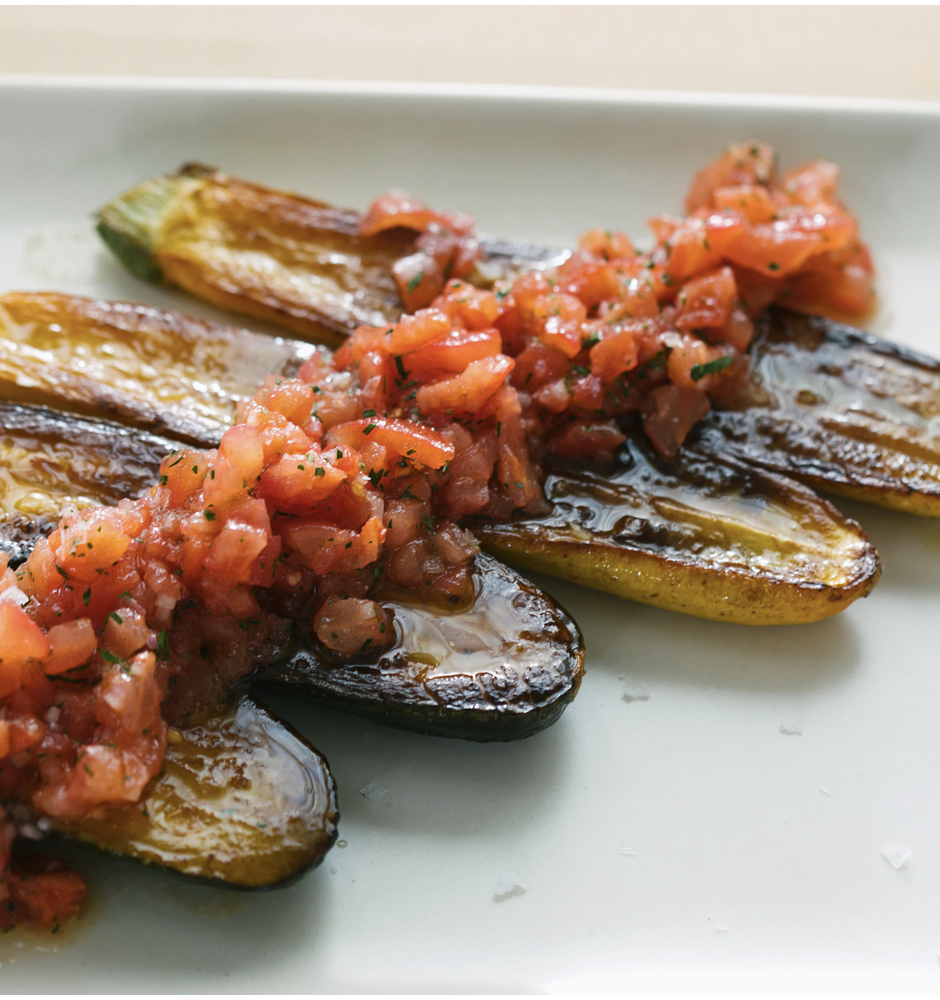

Pan Roasted Zucchini

This is a Pan-Roasted Zucchini Recipe Recipe. This recipe originates from Thomas Keller a 3 Michelin Star Chef from the United States
Ingredients
3 zucchini, green and/or Goldbar
6–8 ounces neutral-flavored/li>
plant-based oil
Vierge sauce
Kosher salt
Kosher Salt
Finishing salt
- Halve the zucchini lengthwise and score the flesh in a crosshatch pattern so that the salt can penetrate it. “Rain” or “snow” salt onto the scored side of the zucchini from a height that allows it to evenly distribute
- Leave the zucchini for 10–15 minutes so that salt has time to draw out mois- ture, which will help maintain the density of the vegetable as it cooks
- Pat the zucchini dry
- Heat canola oil (use just enough to coat the bottom of the pan) in a 12-inch fry pan until it’s shimmering and just beginning to smoke
- Add the zucchini flesh side down in the oil, adjust the heat to allow the zucchini to sear and caramelize without burning
- Cook about 5 minutes, then add herbs or garlic and immediately place the pan in a 450°F oven to roast for 25–30 minutes or until the zucchini are completely soft
- Transfer zucchini to paper towel–lined plate to blot excess oil. Arrange the zucchini on a serving platter. Then spoon the vierge sauce over the top, following by a sprinkling of finishing salt.